Sign in or create your account
Open diinislaam.com/tuhfatul-atfaal. If you are new, tap Create account, choose a username (for example amina123) and a password with at least 6 letters or numbers. Next time just tap Sign in.
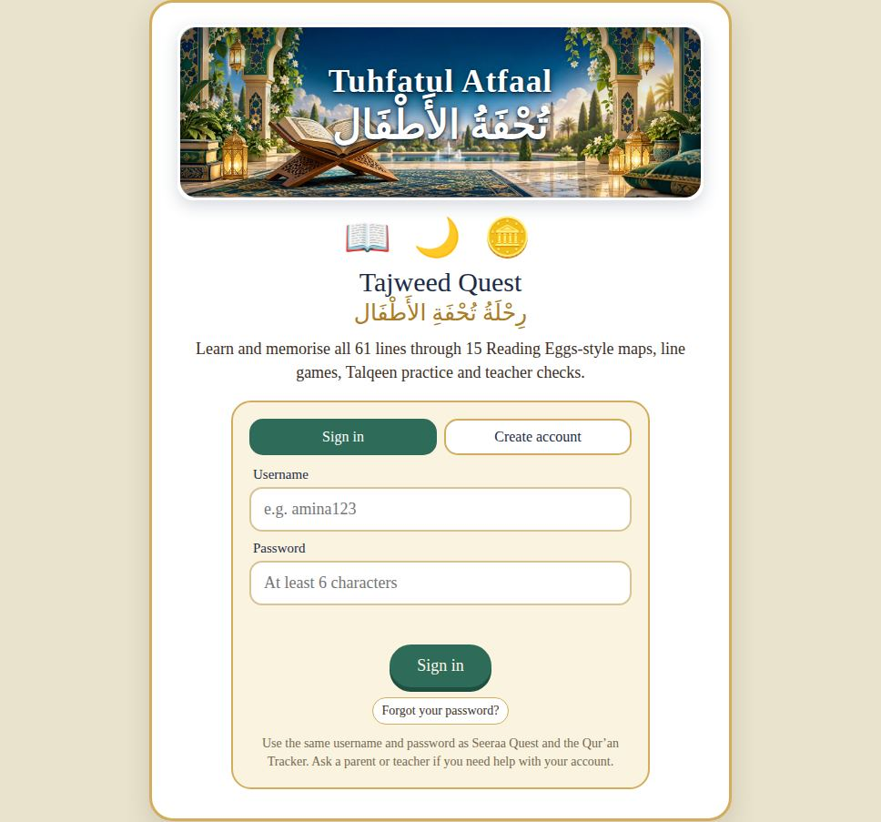
Join your class
- Ask your teacher for your class code — 6 letters, like TQ7K2M.
- On your map page, scroll down to “From your teacher” and tap 🏫 Join your class.
- Type the code and tap Join class. ✅ Now you see your class news, homework, quizzes and the class leaderboard.
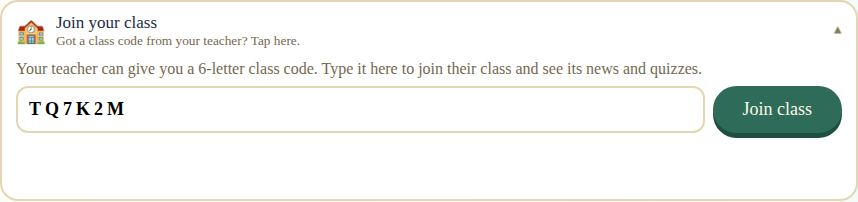
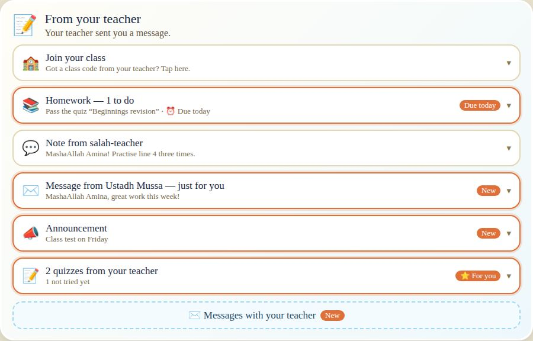
Your map — start here
The Tuhfah is split into 15 maps. Each map is a road with a few lines of the poem. Your character stands next to the first lesson and points to it — “Start here!”. Tap the glowing circle to open the lesson.
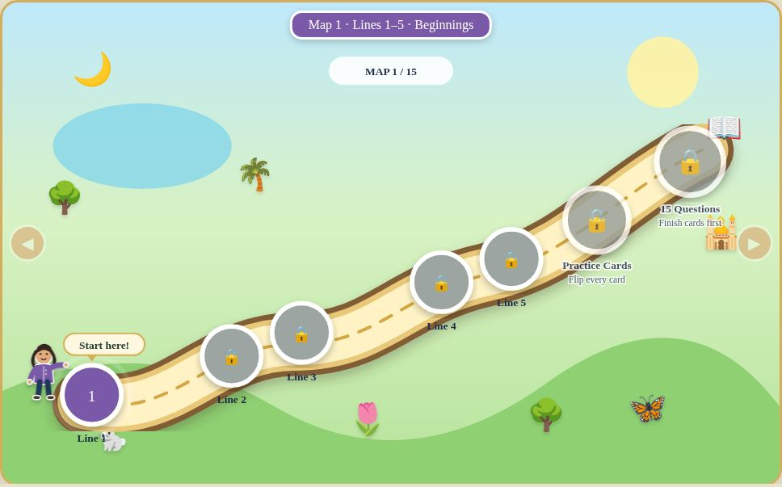
The bar at the top shows how you are doing:
- 🔥 Streak — days in a row you practised. Come back every day to keep it burning!
- 🪙 Coins and ⭐ stars — earned in lessons and challenges.
- 🧠 Memorised lines and 📍 lessons done out of 62.
- Tap your character to change how they look — clothes, colours and hijab or turban.
A lesson in 7 steps
Every lesson teaches one line of the Tuhfah. Follow the steps on the left, from top to bottom:
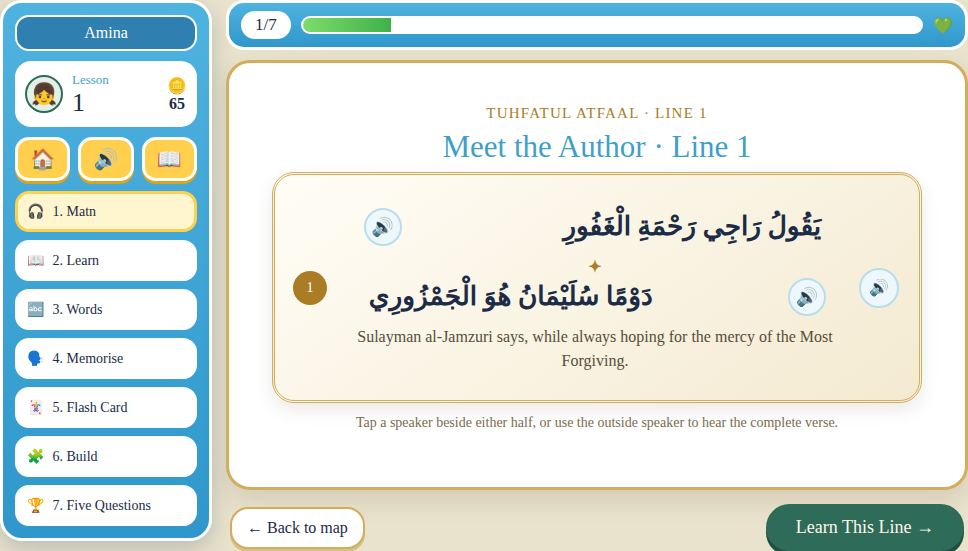
- 🎧 Matn — listen to the line and read along.
- 📖 Learn — what the line means and the Tajweed rule, with examples from the Qur’an.
- 🔤 Words — match each Arabic word with its meaning.
- 🗣️ Memorise — the same 5 levels as Memorise mode (read along, half hidden, first letters, from memory, record yourself). Pass level 4 to open the next step — recording yourself is optional.
- 🃏 Flash Card — quick revision.
- 🧩 Build — put the words of the line in the right order.
- 🏆 Five Questions — a short quiz to finish the lesson.
Walk along the road
When you finish a lesson, your character walks to the next lesson on the road. After 3 seconds the next lesson opens by itself — or tap Stay on map to rest.
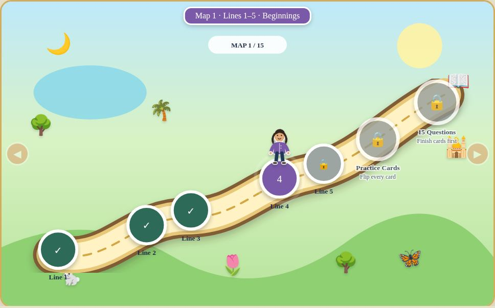
Practice Cards & the 15-question challenge
After the last lesson of a map, two new stops open at the end of the road:
- 🃏 Practice Cards — flip every card to revise the whole map.
- 🏆 15 Questions — the Map Challenge. Score 12 or more to pass.
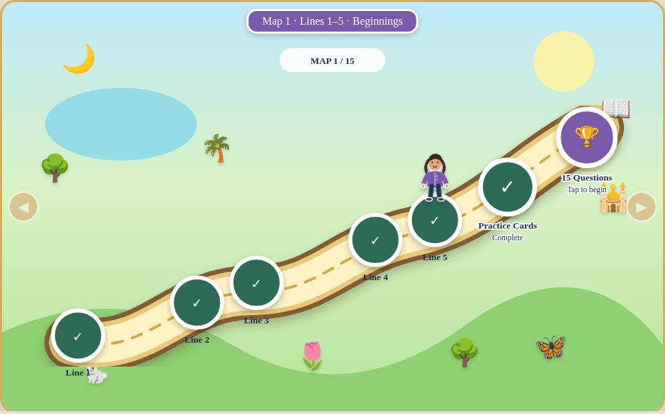

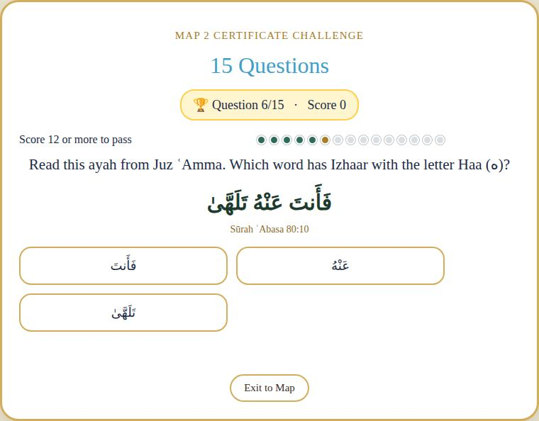

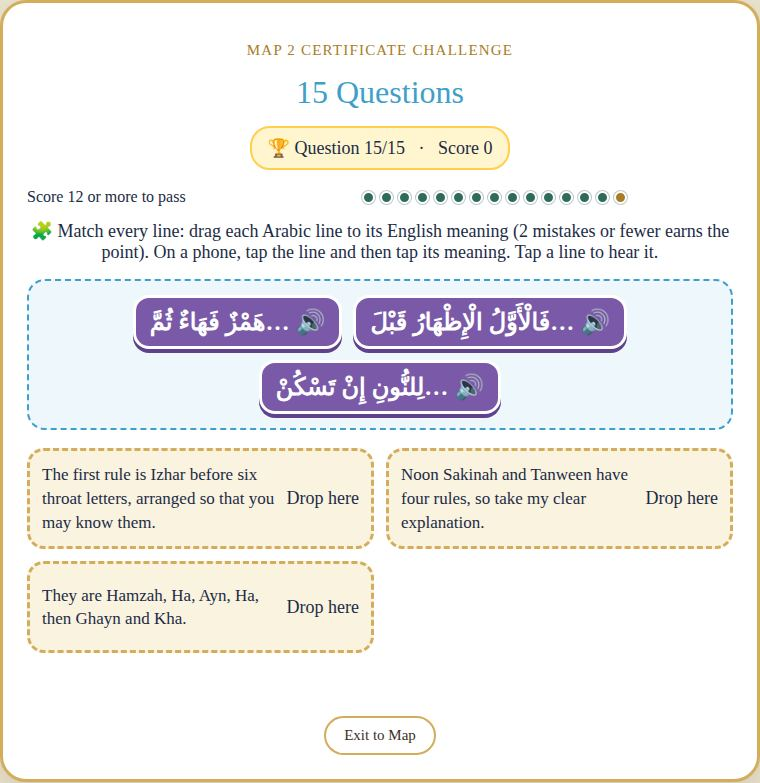
Teacher check & the door to the next map
When you pass the challenge, a door appears at the end of the road and your character points to it. Tap the door:
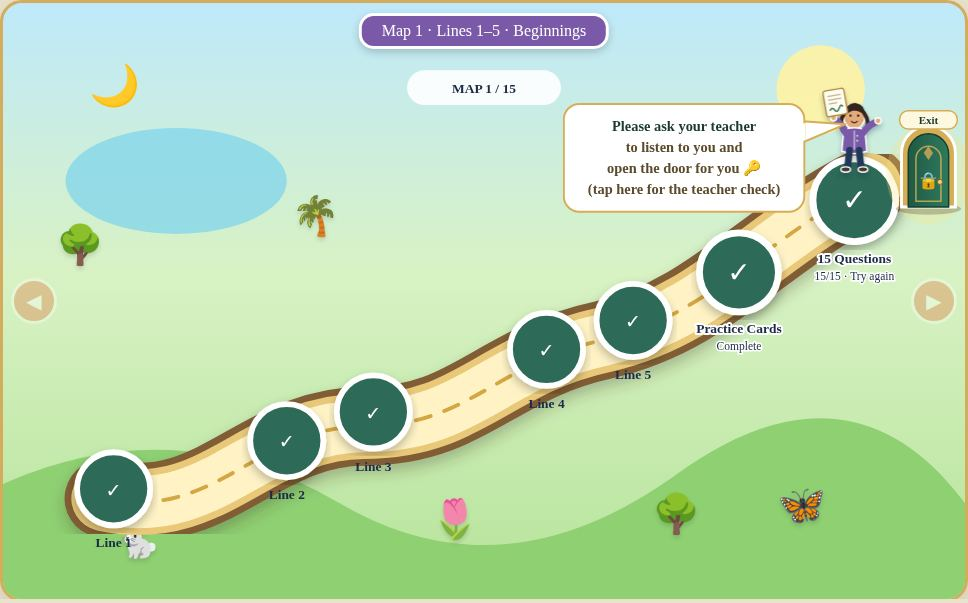
- Recite all the lines of the map to your teacher (Talqeen).
- Your teacher fills in the Talqeen Teacher Check under the map and signs it.
- The door opens! Tap it — your character walks through and into the next map. 🎉

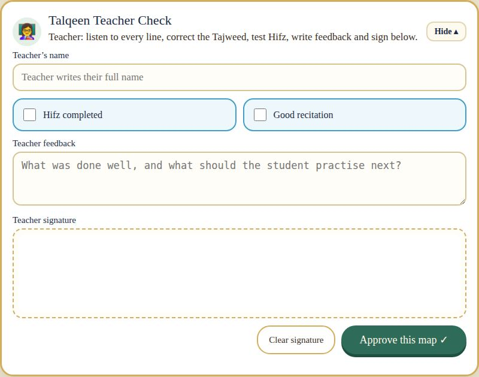

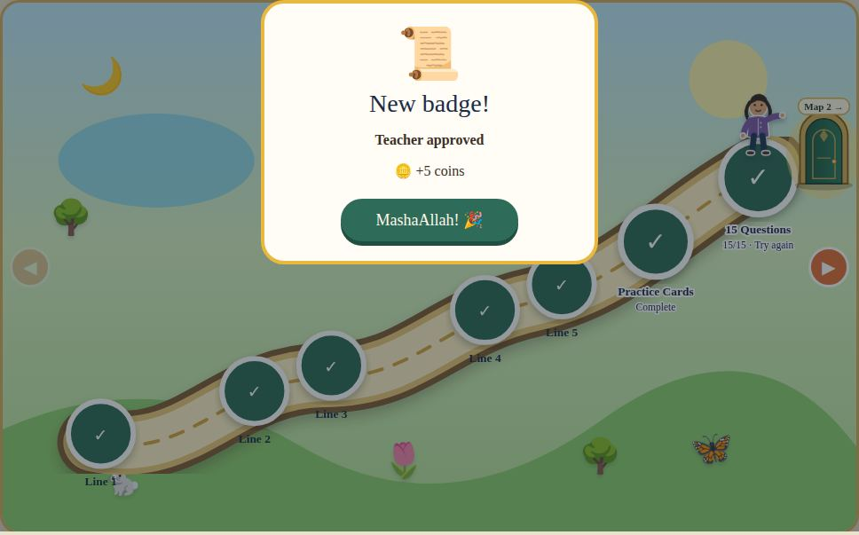
Memorise in 5 levels
Tap 🧠 Memorise under the map. You see every line up to your map — your map is open, earlier maps are folded (tap Map 1 ▸ to open them for revision).
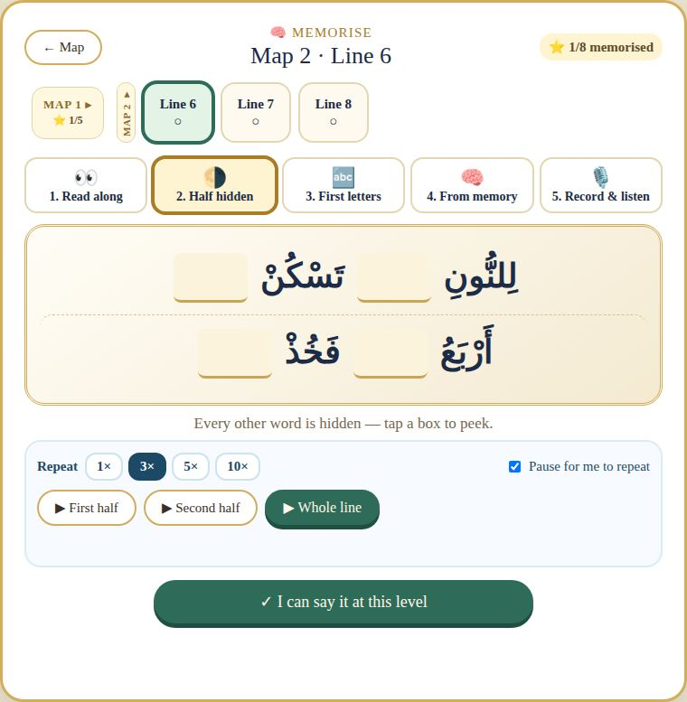
- Press ▶ Whole line and choose how many repeats (1×, 3×, 5×, 10×). Keep “Pause for me to repeat” on so you can say it after the reciter.
- When you can say it at that level, tap ✓ I can say it at this level. Reach level 4 to earn ⭐ and 🪙 5 coins!
- Level 5 (record yourself) is optional. After level 4 you can tap Skip recording — next line → and go on.
Record yourself & send it to your teacher
In Memorise, open 🎙️ 5. Record & listen:
- Tap 🎙️ Record myself and say the whole line from memory. Tap ■ Stop.
- Press ▶ and listen to yourself — does it sound right?
- Tap 📤 Send to my teacher. When your teacher listens, you will see their feedback right under your recording. 💬
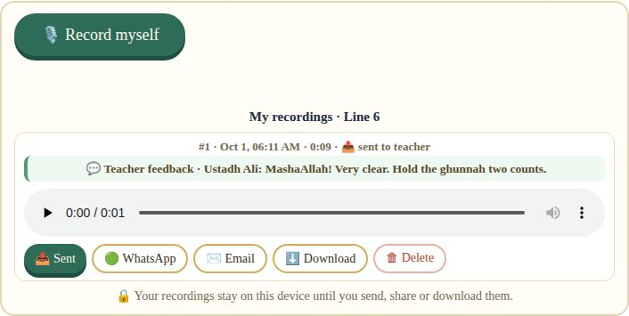
- 🟢 WhatsApp or ✉️ Email — send it to yourself or your family.
- ⬇️ Download — keep the audio file.
- 🗑 Delete — remove a recording you don’t want.
Class files — download worksheets
Your teacher can share PDF worksheets and printables with your class. Find them under the map in “From your teacher” → 📁 Class files. A New tag shows when your teacher adds a file.
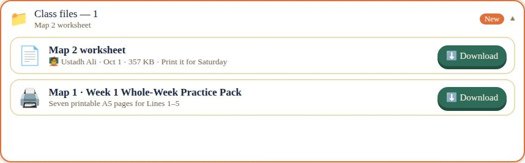
- The number shows how many files your teacher shared.
- On Map 1 you also find the Week 1 Whole-Week Practice Pack — seven pages to practise at home.
- New files appear by themselves — no need to reload.
Tajweed rules, badges & messages
- 📖 Tajweed rules — every rule of the Tuhfah with its letters and examples. Tap an example to hear it.
- 🏅 Badges — collect them for streaks, finished maps, memorised lines and more.
- ✉️ Messages with your teacher — ask a question or say salām. You can edit a message if you made a mistake.

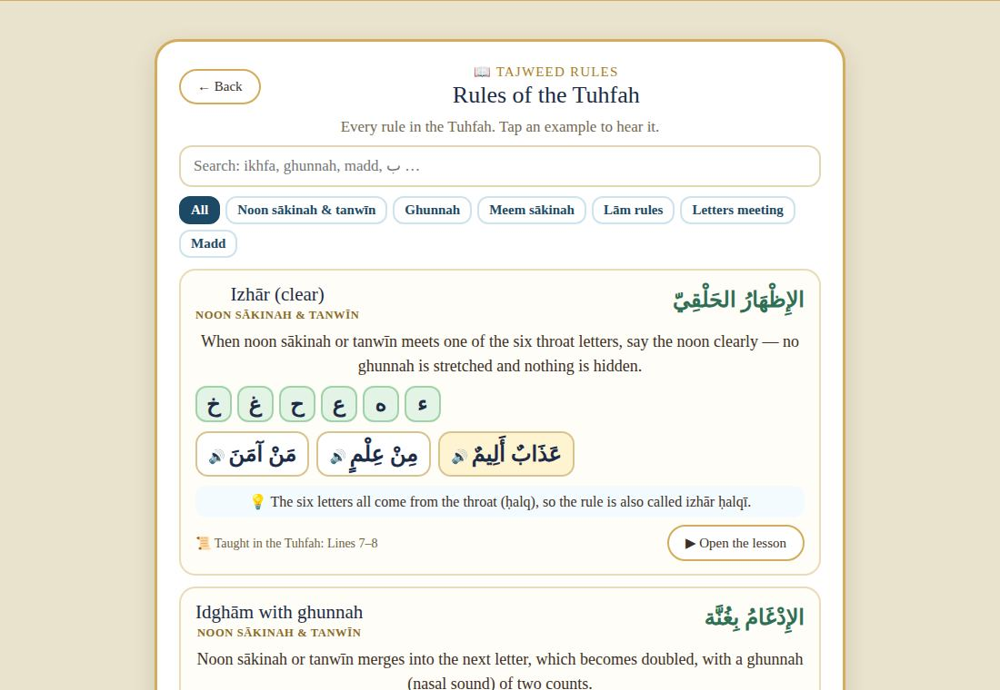

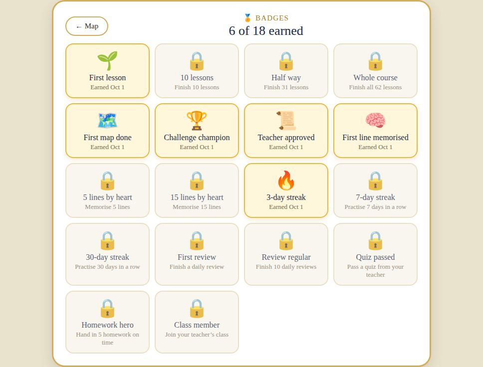